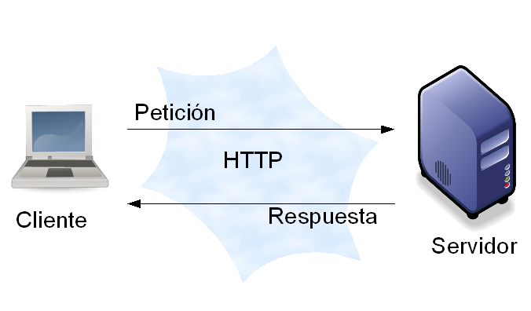
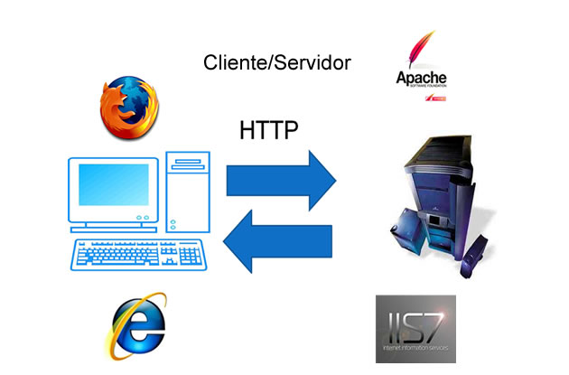
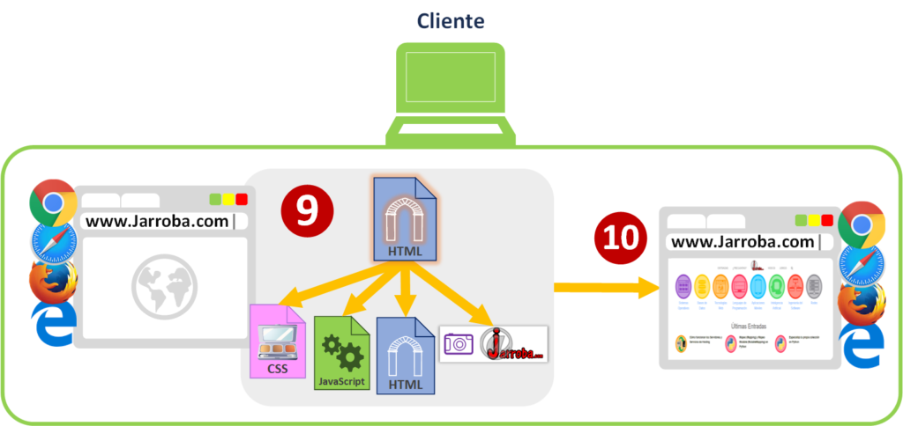

fig.1. representacion grafica de la arquitectura cliente/servidor
Arquitectura Cliente servidor. Esta arquitectura consiste básicamente en un cliente que realiza peticiones a otro programa (el servidor) que le da respuesta. Aunque esta idea se puede aplicar a programas que se ejecutan sobre una sola computadora es más ventajosa en un sistema operativo multiusuario distribuido a través de una red de computadoras. La interacción cliente-servidor es el soporte de la mayor parte de la comunicación por redes. Ayuda a comprender las bases sobre las que están construidos los algoritmos distribuidos.
Importancia del modelo cliente servidor
La arquitectura cliente servidor tiene dos partes claramente diferenciadas, por un lado la parte del servidor y por otro la parte de cliente o grupo de clientes donde lo habitual es que un servidor sea una máquina bastante potente con un hardware y software específico que actúa de depósito de datos y funcione como un sistema gestor de base de datos o aplicaciones.
En esta arquitectura el cliente suele ser estaciones de trabajo que solicitan varios servicios al servidor, mientras que un servidor es una máquina que actúa como depósito de datos y funciona como un sistema gestor de base de datos, este se encarga de dar la respuesta demandada por el cliente.
Esta arquitectura se aplica en diferentes modelos informáticos alrededor del mundo donde su propósito es mantener una comunicaciones de información entre diferentes entidades de una red mediante el uso de protocolos establecidos y el apropiado almacenaje de la misma
El más claro ejemplo de uso de una arquitectura cliente servidor es la red de Internet donde existen ordenadores de diferentes personas conectadas alrededor del mundo, las cuales se conectan a través de los servidores de su proveedor de Internet por ISP donde son redirigidos a los servidores de las páginas que desean visualizar y de esta manera la información de los servicios requeridos viajan a través de Internet dando respuesta a la solicitud demandada.
La principal importancia de este modelo es que permite conectar a varios clientes a los servicios que provee un servidor y como sabemos hoy en día, la mayoría de las aplicaciones y servicios tienen como gran necesidad que puedan ser consumidos por varios usuarios de forma simultanea.
Componentes
RED:Una red es un conjunto de clientes, servidores y base de datos unidos de una manera física o no física en el que existen protocolos de transmisión de información establecidos.
CLIENTE:El concepto de cliente hace referencia a un demandante de servicios, este cliente puede ser un ordenador como también una aplicación de informática, la cual requiere información proveniente de la red para funcionar.
SERVIDOR: Un servidor hace referencia a un proveedor de servicios, este servidor a su vez puede ser un ordenador o una aplicación informática la cual envía información a los demás agentes de la red.
PROTOCOLO: Un protocolo es un conjunto de normas o reglas y pasos establecidos de manera clara y concreta sobre el flujo de información en una red estructurada.
SERVICIOS: Un servicio es un conjunto de información que busca responder las necesidades de un cliente, donde esta información pueden ser mail, música, mensajes simples entre software, videos, etc.
BASE DE SATOS : Son bancos de información ordenada, categorizada y clasificada que forman parte de la red, que son sitios de almacenaje para la utilización de los servidores y también directamente de los clientes.
Diferencia entre cliente y servidor
Como hemos mencionado anteriormente una máquina cliente como servidor se refieren a computadoras que son usadas para diferentes propósitos.
El cliente es un computador pequeño con una estructura al igual a la que tenemos en nuestras oficinas u hogares la cual accede a un servidor o a los servicios del mismo a través de Internet o una red interna. Un claro ejemplo a este caso es la forma en que trabaja una empresa modelo con diferentes computadores donde cada uno de ellos se conectan a un servidor para poder obtener archivos de una base de datos o servicios ya sea correos electrónicos o aplicaciones.
El servidor al igual que el cliente, es una computadora pero con diferencia de que tiene una gran capacidad que le permite almacenar gran cantidad de diversos de archivos, o correr varias aplicaciones en simultaneo para así nosotros los clientes poder acceder los servicios.
En la actualidad existen varios tipos de servidores como hablamos anteriormente. Los mismos pueden contener y ejecutar aplicaciones, sitios web, almacenaje de archivos, diversas bases de datos, entre muchos más.
Es importante mencionar que un cliente también puede tener una función de servidor ya que el mismo puede almacenar datos en su disco duro para luego ser usados en vez de estar conectándose al servidor continuamente por una acción que quizás sea muy sencilla.

fig.2. Modelo cliente/servidor
Tipos de arquitecturas cliente servidor
Arquitectura de dos capas
Esta se utiliza para describir los sistemas cliente servidor en donde el cliente solicita recursos y el servidor responde directamente a la solicitud con sus propios recursos. Eso significa que el servidor no requiere de una aplicación extra para proporcionar parte del servicio.
Arquitectura de tres capas
En la arquitectura de tres capas existe un nivel intermediario, eso significa que la arquitectura generalmente está compartida por un cliente que como hablamos más arriba es el que solicita los recursos equipado con una interfaz de usuario o mediante un navegador web.La capa del medio es denominada software intermedio cuya tarea es proporcionar los recursos solicitados pero que requiere de otro servidor para hacerlo. La última capa es el servidor de datos que proporciona al servidor de aplicaciones los datos necesarios para poder procesar y generar el servicio que solicito el cliente en un principio.
Arquitectura N capas
En la arquitectura de tres capas, los servidores dos y tres realizaron una tarea específica por lo tanto un servidor web puede usar los servicios de otros servidores para poder proporcionar su propio servicio.
Por consiguiente la arquitectura en tres niveles es potencialmente una arquitectura en N capas ya que así como está contemplado en tres niveles como el caso anterior puede estar compuesto por N servidores donde cada uno de ellos brindan su servicio específico.
VENTAJAS LA ARQUITECTURA CLIENTE-SERVIDOR
Existencia de plataformas de hardware cada vez más baratas. Esta constituye a su vez una de las más palpables ventajas de este esquema, la posibilidad de utilizar máquinas mucho más baratas que las requeridas por una solución centralizada, basada en sistemas grandes (mainframes). Además, se pueden utilizar componentes, tanto de hardware como de software, de varios fabricantes, lo cual contribuye considerablemente a la reducción de costos y favorece la flexibilidad en la implantación y actualización de soluciones.
Facilita la integración entre diferentes sistemas y comparte información permitiendo por ejemplo que las máquinas ya existentes puedan ser utilizadas mediante una interfaz más amigable para el usuario. De esta manera podemos integrar varias PCs con sistemas medianos y grandes sin necesidad de que todos tengan que utilizar el mismo sistema operativo.
Al favorecer el uso de las interfaz de gráficas interactivas, los sistemas construidos bajo este esquema tienen una mayor interacción con el usuario.
La estructura modular facilita de más la integración de nuevas tecnologías y el crecimiento de la infraestructura computacional favoreciendo así la estabilidad de las soluciones.
El modelo cliente servidor permite además proporcionar a las diferentes áreas de una empresa generar un orden de trabajo en donde cada sector puede trabajar en su área pero accediendo al mismo servidor e información que los demás sin generar conflictos. Esto es de gran utilidad ya que si ponemos como ejemplo una empresa con varios empleados al momento de trabajar es importante que todos puedan hacerlo en simultáneo.
Desventajas
Requiere habilidad para que un servidor sea reparado. Por ejemplo si un problema ocurre en la red, se requiere de alguien con un amplio de esta para poder repararla en su totalidad para así dejar que la información y el correcto funcionamiento siga su flujo.
Otro problema es la seguridad, el hecho que se comparte canales de información entre servidores y clientes requieren que estas pasen por procesos de validación, es decir protocolos de seguridad que pueden tener algún tipo de puerta abierta permitiendo que se generen daños físicos, amenazas o ataques de malware.
Este modelo representa una limitación importante en cuanto a los costos económicos debido a que estos servidores son computadoras de alto nivel con un hardware y software específicos para poder dar un correcto funcionamiento a nuestras aplicaciones. Algo importante a destacar es que no solo es caro a la hora de solucionar problemas como mencionamos antes, sino que también tiene un costo elevado para reemplazar componentes que estén averiados.
Ejemplos de cliente servidor
Existen muchísimos servicios, protocolos y servidores que trabajan con el mismo modelo que mencionamos antes. Casi todo el Internet funciona de esa forma de hecho. Algunos ejemplos de la arquitectura cliente servidor pueden ser:
Navegar una web...funciona basándonos en un cliente web (navegador) y un servidor web como Apache, Nginx o LiteSpeed
Protocolo FTP...funciona de idéntica forma, se utiliza un cliente de FTP (como Filezilla) para conectar a un servidor FTP (como Pure-FTPD, Proftpd, etc)
SSH...es idéntico también, se utiliza un cliente SSH para conectar al servidor SSH que corre en una red remota.
Juegos en red... existen clientes que permiten a jugadores online jugar desde sus casas conectándose a servidores de juegos remotos.
Sistema DNS...el famoso servidor DNS interactúa con clientes DNS también, es decir, basa su arquitectura en el modelo cliente servidor
Servidor de Correo...donde clientes de correo consultan el correo al servidor de correo remoto, tanto desde móvil o una computadora de escritorio o laptop.
Características de la arquitectura Cliente-Servidor
Combinación de un cliente que interactúa con el usuario, y un servidor que interactúa con los recursos a compartir. El proceso del cliente proporciona la interfaz entre el usuario y el resto del sistema. El proceso del servidor actúa como un motor de software que maneja recursos compartidos tales como bases de datos, impresoras, Módem, etc.
Las tareas del cliente y del servidor tienen diferentes requerimientos en cuanto a recursos de cómputo como velocidad del procesador, memoria, velocidad y capacidades del disco e input-output devices.
Existe una clara distinción de funciones basadas en el concepto de”servicio”, que se establece entre clientes y servidores.
Se establece una relación entre procesos distintos, los cuales pueden ser ejecutados en la misma máquina o en máquinas diferentes distribuidas a lo largo de la red.
La relación establecida puede ser de muchos a uno, en la que un servidor puede dar servicio a muchos clientes, regulando su acceso a los recursos compartidos.
Los clientes corresponden a procesos activos en cuanto a que son estos los que hacen peticiones de servicios. Estos últimos tienen un carácter pasivo, ya que esperan peticiones de los clientes.
No existe otra relación entre clientes y servidores que no sea la que se establece a través del intercambio de mensajes entre ambos. El mensaje es el mecanismo para la petición y entrega de solicitudes de servicios.
El ambiente es heterogéneo. La plataforma de hardware y el sistema operativo del cliente y del servidor no son siempre los mismos. Precisamente una de las principales ventajas de esta arquitectura es la posibilidad de conectar clientes y servidores independientemente de sus plataformas.
El concepto de escalabilidad tanto horizontal como vertical es aplicable a cualquier sistema Cliente-Servidor. La escalabilidad horizontal permite agregar más estaciones de trabajo activas sin afectar significativamente el rendimiento. La escalabilidad vertical permite mejorar las características del servidor o agregar múltiples servidores.

fig.1. grafica de la arquitectura cliente/servidor